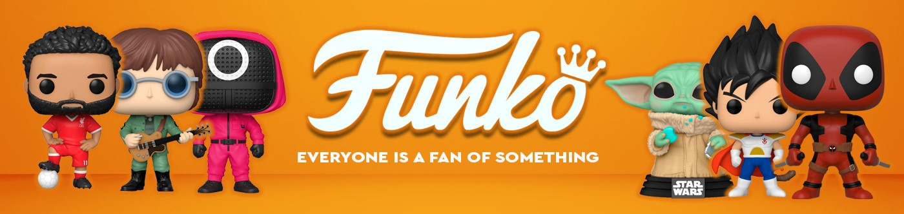

¡BIENVENIDO AL UNIVERSO FUNKO!

En Funkoverse
En FunkoVerse, hemos creado un espacio dedicado exclusivamente a los amantes de los Funko Pop, esas pequeñas figuras que representan mucho más que un simple coleccionable. Aquí podrás descubrir todo lo relacionado con estas icónicas figuras y las últimas novedades del mercado.
¿Sabías que cada Funko cuenta una historia única?
Estos pequeños personajes encapsulan décadas de cultura pop, entretenimiento y recuerdos personales. Ya seas un coleccionista experto que busca completar su estantería con piezas raras o alguien que acaba de empezar, en esta página encontrarás todo lo necesario para explorar, disfrutar y aprender sobre esta increíble afición. FunkoVerse no es solo una web, es una comunidad. Únete a nosotros mientras exploramos este fascinante mundo lleno de sorpresas y maravillas.


Exclusividad Funko
Como ya habéis podido comprobar, el universo Funko es un entramado interminable de productos de todos los tipos y para todos los gustos, donde podremos encontrar desde figuras de tus películas, series, juegos favoritos, hasta juegos de mesa, pasando incluso por utensilios del hogar como pueden ser tazas, saleros y un monton de cosas. Ahora bien, centrándonos en el multiverso de los Pop!, podemos encontrar una tendencia cada vez más en auge, la "busqueda de las pegatinas", sí, amigos, cada vez son más las personas que prefieren la exclusividad de una etiqueta a la esencia del producto en sí. Es así, la pegatina puede hacer que una figura duplique o triplique su precio regular y es por eso que desde Funko vamos a detallaros cada tipo de pegatina que encontraremos en el mercado.
Las Pegatinas en el Mundo Funko: Un Detalle que Marca la Diferencia
El universo Funko Pop no solo es conocido por la diversidad de sus figuras, sino también por los detalles que las hacen únicas y deseadas entre coleccionistas. Entre estos detalles destacan las pegatinas en las cajas, que cumplen una doble función: identificar ediciones especiales y realzar la exclusividad de ciertas figuras. En este extenso análisis, exploraremos las pegatinas más codiciadas por los fanáticos, centrándonos en aquellas que elevan el estatus de un Funko Pop: Chase, Chase Glow in the Dark, Flocked, Glow in the Dark, Exclusive, Diamond Collection, Summer Convention y la icónica pegatina de Comic-Con.
1. Chase: La Joya del Azar
La pegatina Chase es probablemente una de las más reconocibles y buscadas por los coleccionistas. Las figuras "Chase" son variantes de ediciones estándar y se producen en cantidades limitadas, generalmente con una proporción de 1 Chase por cada 6 figuras regulares.
● Diseño y Características: Las figuras Chase suelen tener ligeras modificaciones respecto a la edición estándar, como cambios en el color, accesorios, poses o expresiones faciales.
● Rareza: Debido a su baja frecuencia de aparición, encontrar una figura con la pegatina Chase es visto como un golpe de suerte, convirtiéndola en un objeto muy deseado.
2. Chase Glow in the Dark: La Magia Brillante
La variante Chase Glow in the Dark (GITD) combina dos elementos que fascinan a los coleccionistas: la exclusividad del Chase y el atractivo de las figuras que brillan en la oscuridad.
● Características Únicas: Estas figuras no solo tienen el diseño especial de los Chase, sino que también están tratadas con un material fosforescente que las hace brillar cuando se exponen a la luz.
● Valor Añadido: La combinación de la etiqueta Chase y GITD eleva su rareza y su precio en el mercado secundario. Es especialmente popular en personajes relacionados con elementos sobrenaturales, mágicos o tecnológicos.
3. Flocked: La Textura que Marca la Diferencia
Las figuras con la pegatina Flocked tienen un acabado único que les da una textura aterciopelada, simulando piel o pelaje.
● Las figuras con la pegatina Flocked tienen un acabado único que les da una textura aterciopelada, simulando piel o pelaje.
● Pegatina Flocked: Certifica que la figura tiene esta textura especial, haciéndola más atractiva y coleccionable.
4. Glow in the Dark: Brillo que Cautiva
La pegatina Glow in the Dark (GITD) identifica figuras que tienen la capacidad de brillar en la oscuridad.
● Aplicación: El efecto se logra gracias a un tratamiento en ciertas partes de la figura, como los ojos, armas o trajes, que al exponerse a la luz, retienen energía y luego brillan en condiciones de baja iluminación.
● Popularidad: Muy común en personajes de ciencia ficción, superhéroes o villanos. Ejemplos incluyen figuras de Doctor Strange, Ghost Rider o Green Lantern.
5. Exclusive: Ediciones Especiales en Tiendas Seleccionadas
Las figuras con la pegatina Exclusive son aquellas que están disponibles únicamente en tiendas específicas, como Hot Topic, GameStop, Target o Walmart.
● Las figuras con la pegatina Exclusive son aquellas que están disponibles únicamente en tiendas específicas, como Hot Topic, GameStop, Target o Walmart.
● Variedad de Diseños: Las exclusivas pueden tener variantes de color, accesorios únicos o poses que no están disponibles en la edición estándar.
6. Diamond Collection: El Encanto del Brillo
La pegatina Diamond Collection representa figuras decoradas con un acabado brillante y reluciente que les da un aspecto llamativo y premium.
● Uso: Comúnmente aplicada a personajes femeninos, mágicos o icónicos, como las princesas de Disney, Harley Quinn o personajes de My Little Pony.
● Valor Estético: Estas figuras son altamente deseadas por su belleza y su capacidad para destacar en cualquier colección.
7. Summer Convention: Exclusividad Veraniega
La pegatina Summer Convention se asocia con figuras lanzadas durante eventos de verano, como la San Diego Comic-Con (SDCC).
● Edición Limitada: Estas figuras están disponibles por tiempo limitado y suelen lanzarse en cantidades reducidas.
● Variedad de Personajes: Las exclusivas de verano abarcan una amplia gama de personajes, desde héroes de cómics hasta personajes de anime y series de televisión.
8. Comic-Con: El Santo Grial del Coleccionista
La pegatina de Comic-Con es, sin duda, una de las más icónicas y valiosas. Estas figuras son exclusivas de convenciones como la San Diego Comic-Con (SDCC) o la New York Comic-Con (NYCC).
● Rango de Precios: Las figuras con esta pegatina suelen alcanzar precios exorbitantes en el mercado secundario, ya que su disponibilidad está limitada al evento.
● Características Únicas: Muchas veces incluyen diseños exclusivos que no están disponibles en ninguna otra edición. Además, suelen ser ediciones limitadas numeradas, lo que las convierte en auténticas joyas de colección.
Las Pegatinas y el Arte de Coleccionar
La pegatina de Comic-Con es, sin duda, una de las más icónicas y valiosas. Estas figuras son exclusivas de convenciones como la San Diego Comic-Con (SDCC) o la New York Comic-Con (NYCC).
Las pegatinas en las cajas de los Funko Pop no solo son un detalle decorativo; son un símbolo de rareza, exclusividad y estatus en el mundo de los coleccionistas. Ya sea una figura Chase, GITD, Flocked, o una edición exclusiva de eventos como las convenciones de verano o la Comic-Con, cada pegatina cuenta una historia única y añade un valor incalculable a la pieza. Para los fanáticos de Funko, estas pegatinas no son simplemente un accesorio, sino el puente que conecta sus figuras con eventos, tiendas o momentos especiales, elevando el significado de cada colección.
Aquí vemos un ejemplo de un Funko con la pegatina de la Comic-con: